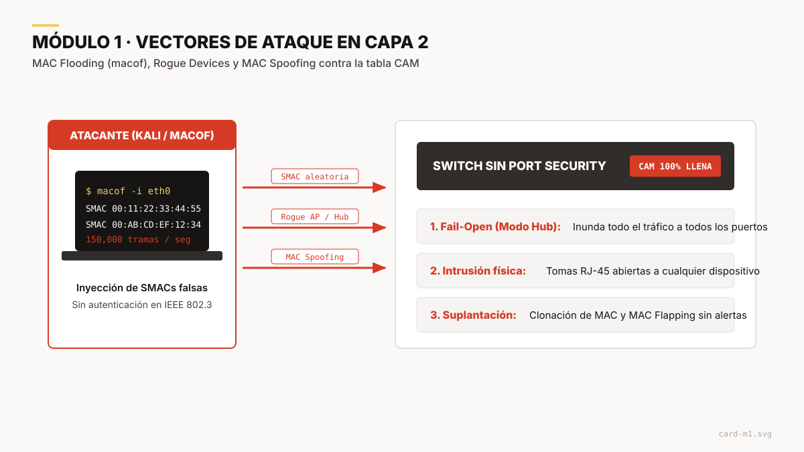

«La Capa de Enlace de Datos no fue diseñada pensando en la hostilidad de los entornos modernos. Asume confianza absoluta. Si un puerto de acceso no está protegido, la red local no tiene barreras frente a intrusos internos.»
Premisa central de la exposición
Resumen del proyecto
El problema. Ethernet heredó un modelo de confianza ciega: la trama no autentica su dirección MAC de origen y el switch acepta cualquier identidad que llegue por un puerto. Además, la tabla CAM donde el switch memoriza las direcciones es un recurso físico finito. Quien conecte un equipo a una toma de pared desprotegida puede saturarla, espiar el tráfico o suplantar a otros equipos.
La solución.Port Security convierte cada puerto de acceso en un punto de control. Limita cuántas direcciones MAC puede usar el puerto, decide cuáles están autorizadas (estáticas, dinámicas o sticky) y define qué hace el switch cuando se rompe la política: descartar, alertar o apagar el puerto.
El enfoque. Port Security es la base, pero no basta por sí solo. La exposición termina con las prácticas de defensa en profundidad que lo complementan: VLAN de aislamiento, supresión de DTP, DHCP Snooping, Dynamic ARP Inspection e IP Source Guard.
Los cuatro módulos
Cada módulo parte del anterior: primero el riesgo, luego cómo el switch reconoce a los equipos legítimos, después cómo reacciona ante un intruso y, al final, cómo endurecer el puerto por completo.

Módulo 1 · Fundamentos y vectores de ataque en Capa 2
Por qué un switch sin Port Security falla ante la inundación de la tabla MAC, la conexión de dispositivos no autorizados y la suplantación de MAC. Incluye cómo funciona la memoria CAM y el modo fail-open que convierte un switch en un hub.
Módulo 2 · Mecanismos de aprendizaje y validación MAC
Cómo el switch memoriza los equipos autorizados mediante direcciones estáticas, dinámicas y sticky: dónde se guardan, si sobreviven a un reinicio y cuándo conviene cada una. También cubre el límite maximum y el envejecimiento absolute e inactivity.
Módulo 3 · Modos de violación y estado err-disabled
Qué hace el switch cuando se rompe la política: Protect descarta en silencio, Restrict descarta y alerta, y Shutdown apaga el puerto. Incluye cómo diagnosticar un puerto en err-disabled y cómo recuperarlo de forma manual o automática.
Defensa en profundidad en Capa 2: puertos no usados en una VLAN blackhole, supresión de DTP contra VLAN hopping, y DHCP Snooping, DAI e IP Source Guard. Cierra con una plantilla de configuración para endurecer un puerto de acceso.